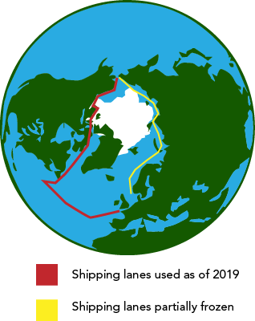
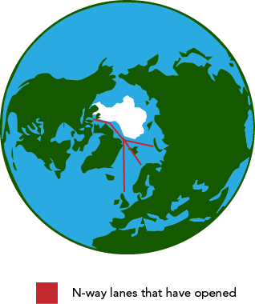

N-way is a northern Canadian based shipping company whose goal is to completely change the way north Atlantic shipping is done. The north pole has always been an artic wasteland that has always been impossible the explore by ship, due to the ice. Sailors have always dreamed of exploring the north pole and the possibilities of traveling through it

This is where N-way comes in, with Global warming melting huge chunks of ice. It has opened a whole new world for shipping and travel. With the ice caps melting paths that were once covered in ice are now opening up enough for ships to traverse them. In the past we would have to travel down south before we could reach waters that were safe for travel. Now with these paths opening up this is gives us a straight shot to import/export goods right to Europe, no longer would we have to waste fuel heading down south. And since these paths would be shorter they would reduce the time it takes and therefore reduce that amount of pollution made by the longer southern routes.

Studies have shown that importing/exporting goods by ship is one of the most cost-effective ways of doing things. On top of that it causes the least amount of pollution. And once enough of the ice caps melt then we will be able to further reduce the pollution caused.
These lanes opening up will also boost the economy for Canada. Canada will have full access to these lanes and will no longer have to rely on The United states to use their waters. This will also bring more jobs because there will be more boats, factories, and docks that will need to be managed. Also, on top of all this it will strength ties with other countries, now that trade with Canada will be more accessible and profitable.